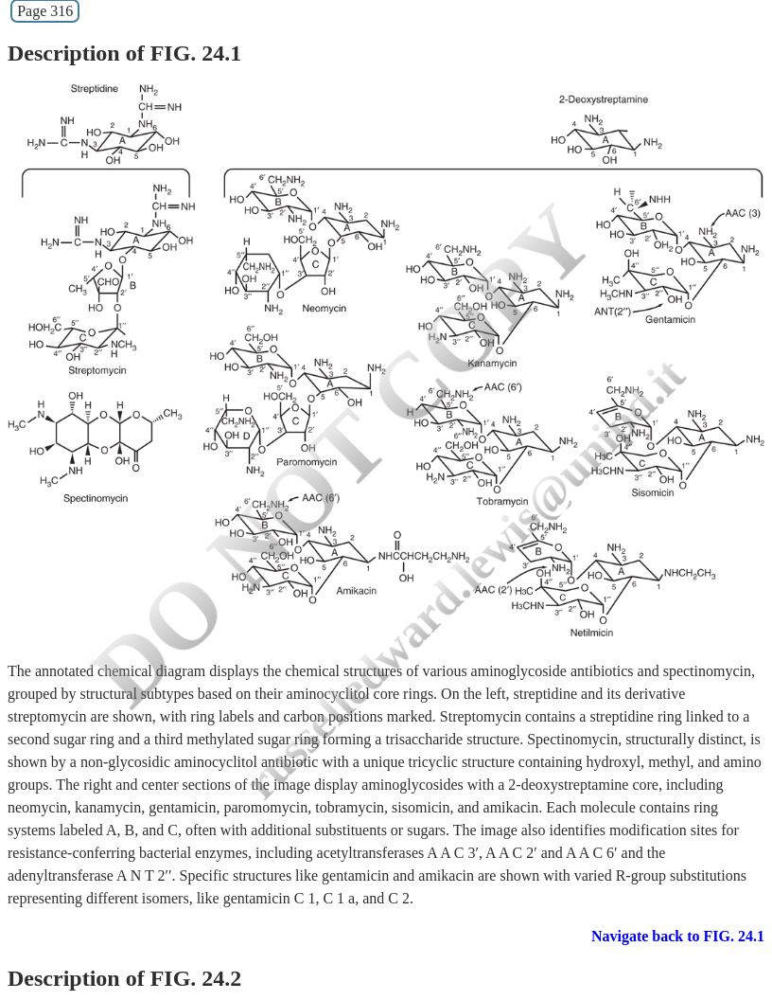
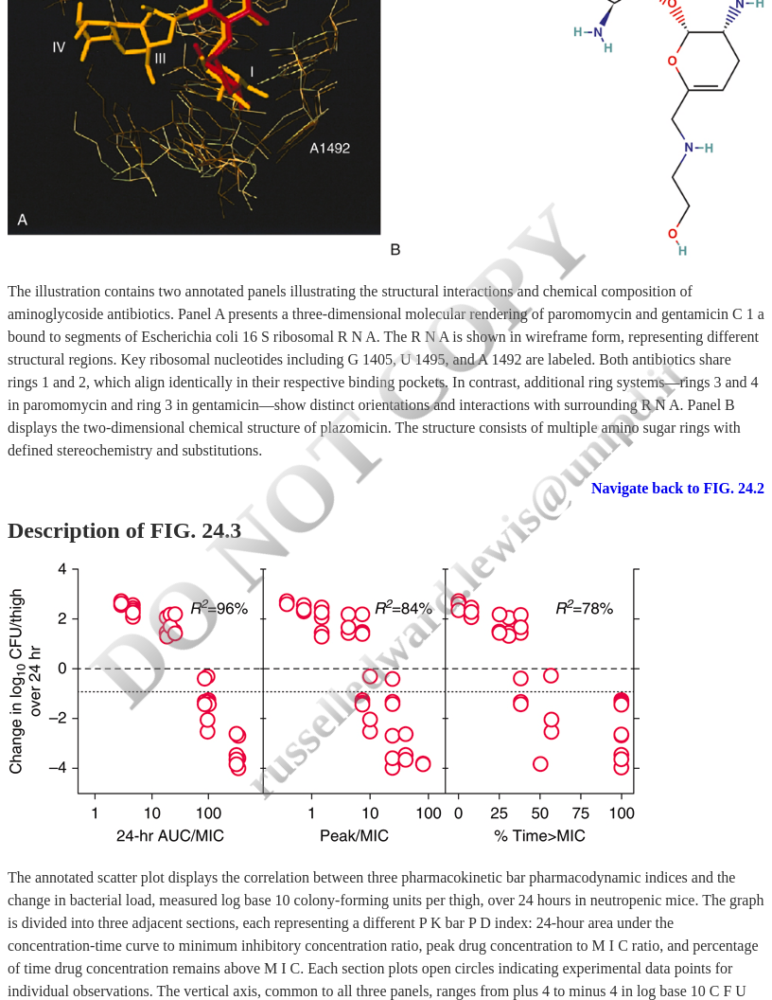
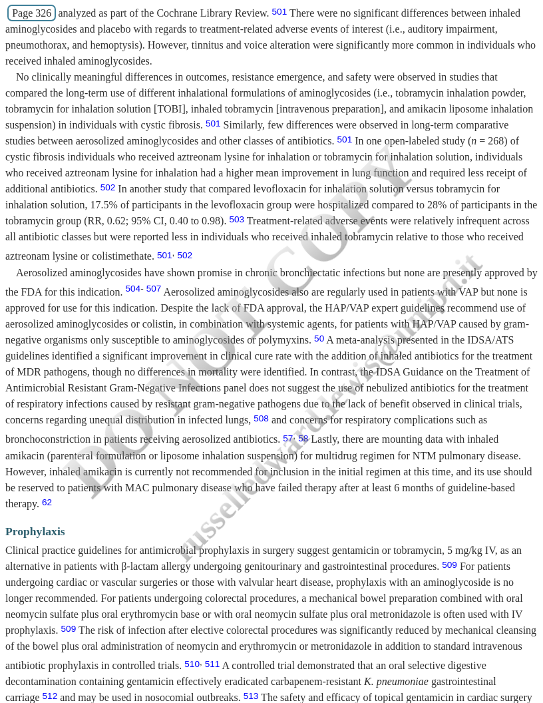

Chapter 24 — A Comprehensive Review
By the end of this lecture, you will be able to:
Part 1: Fundamentals
Part 2: Clinical Application
| Year | Discovery |
|---|---|
| 1944 | Streptomycin (first aminoglycoside) |
| 1949 | Neomycin |
| 1957 | Kanamycin |
| 1963 | Gentamicin |
| 1967 | Tobramycin |
| 1972 | Amikacin |
| 2018 | Plazomicin |
“The grueling search through 10,000 soil samples yielded streptomycin”
“-mycin” suffix
“-micin” suffix
| Agent | Year | Primary Use |
|---|---|---|
| Gentamicin | 1963 | Gram-negative infections, synergy |
| Tobramycin | 1967 | Pseudomonas, CF |
| Amikacin | 1972 | Resistant gram-negatives, TB |
| Plazomicin | 2018 | CRE, MDR organisms |
Streptomycin: Limited availability (TB, plague, tularemia)

Chemical structures of aminoglycosides grouped by structural subtypes
Streptidine-containing:
2-Deoxystreptamine (4,5-disubstituted):
2-Deoxystreptamine (4,6-disubstituted):
These properties directly influence:
This is called “self-promoted uptake”
Defective proteins → Membrane damage → Cell death

3D structure showing aminoglycoside binding to bacterial ribosome
Key residues: A1408, G1405, A1492, A1493
Unique among ribosomal inhibitors:
| Drug Class | Target | Effect |
|---|---|---|
| Aminoglycosides | 30S | Bactericidal |
| Tetracyclines | 30S | Bacteriostatic |
| Macrolides | 50S | Bacteriostatic |
| Linezolid | 50S | Bacteriostatic |
Reason: Mistranslated membrane proteins cause irreversible damage

PK/PD relationship showing concentration-dependent bacterial killing
Higher peak concentrations = Greater bacterial kill
Definition: Continued suppression of bacterial growth after drug removal
Duration: 3-8 hours for gram-negative bacteria
Clinical implication: Supports extended-interval dosing
| Organism | Approximate PAE |
|---|---|
| E. coli | 2-4 hours |
| P. aeruginosa | 2-6 hours |
| S. aureus | 3-6 hours |
Historical target:
Current understanding:
For extended-interval dosing:
Mechanism:
Clinical applications:
Good activity:
Limited/No activity:
| Organism | Preferred Agent |
|---|---|
| P. aeruginosa | Tobramycin > Amikacin |
| Enterobacteriaceae | Gentamicin = Tobramycin |
| Resistant gram-negatives | Amikacin |
| CRE | Plazomicin > Amikacin |
| MRSA (synergy) | Gentamicin |
| Enterococci (synergy) | Gentamicin |
| M. tuberculosis | Streptomycin, Amikacin |
Designed to evade:
Active against:
Limitations:
1. Aminoglycoside-Modifying Enzymes (AMEs)
2. 16S rRNA Methyltransferases
3. Efflux Pumps
Primary indications (usually combination therapy):
Enterococcal endocarditis:
Staphylococcal endocarditis (native valve):
Traditional regimen:
Current guidelines (IDSA 2010):
| Feature | Extended-Interval | Traditional |
|---|---|---|
| Frequency | q24h | q8-12h |
| Peak | Higher | Lower |
| Trough | Undetectable | Detectable |
| Efficacy | Optimized | Adequate |
| Toxicity | Lower | Higher |
| Monitoring | Simpler | Complex |
Extended-interval is preferred for most indications
| Agent | Dose | Frequency |
|---|---|---|
| Gentamicin | 5-7 mg/kg | q24h |
| Tobramycin | 5-7 mg/kg | q24h |
| Amikacin | 15-20 mg/kg | q24h |
| Plazomicin | 15 mg/kg | q24h |
Use actual body weight unless obese
| Agent | Daily Dose | Division |
|---|---|---|
| Gentamicin | 3 mg/kg/day | q8h or q12h |
| Tobramycin | 3 mg/kg/day | q8h or q12h |
Target peaks: 3-4 mg/L
Target troughs: < 1 mg/L
Used for:
Definition of obesity for dosing:
Calculate Adjusted Body Weight (ABW):
\[ABW = IBW + 0.4 \times (Actual - IBW)\]
Ideal Body Weight (IBW):
Patient: 180 kg male, 5’10” (70 inches)
Step 1: Calculate IBW \[IBW = 50 + 2.3(70-60) = 73 kg\]
Step 2: Calculate ABW \[ABW = 73 + 0.4(180-73) = 73 + 42.8 = 115.8 kg\]
Step 3: Calculate dose \[Gentamicin = 7 mg/kg \times 116 kg = 812 mg\]
Round to 800 mg IV q24h
Key principle: Aminoglycoside clearance ≈ GFR
| CrCl (mL/min) | Interval Adjustment |
|---|---|
| > 60 | q24h |
| 40-60 | q36h |
| 20-40 | q48h |
| < 20 | Extend further or use TDM |
Alternative: Reduce dose, maintain interval
For gentamicin/tobramycin 7 mg/kg:
Advantages:
Conventional hemodialysis:
High-flux hemodialysis:
Measure levels to guide dosing
Continuous renal replacement therapy:
| CRRT Mode | Typical Clearance |
|---|---|
| CVVH | 15-25 mL/min |
| CVVHD | 20-30 mL/min |
| CVVHDF | 25-40 mL/min |
Dose-limiting toxicities:
Risk increases with:
Accumulation in proximal tubular cells:
Typically manifests:
Patient factors:
Drug factors:
Concurrent nephrotoxins:
Use extended-interval dosing
Keep courses short (≤5 days when possible)
Monitor troughs
Maintain euvolemia
Avoid concurrent nephrotoxins when possible
Monitor serum creatinine every 2-3 days
Cochlear toxicity (hearing loss):
Vestibular toxicity:
Hair cell destruction in inner ear:
Risk factors:
m.1555A>G mitochondrial mutation:
Implications:
Mechanism:
Risk factors:
Management:
| Interacting Drug | Effect |
|---|---|
| Amphotericin B | ↑ Nephrotoxicity |
| Vancomycin | ↑ Nephrotoxicity |
| Loop diuretics | ↑ Ototoxicity |
| Cisplatin | ↑ Both toxicities |
| Neuromuscular blockers | ↑ Paralysis |
| NSAIDs | ↑ Nephrotoxicity |
| IV contrast | ↑ Nephrotoxicity |
Always recommended:
Optional (short course, normal renal function):
Extended-interval dosing:
| Agent | Target Peak | Target Trough |
|---|---|---|
| Gentamicin | 15-20 mg/L | < 1 mg/L |
| Tobramycin | 15-20 mg/L | < 1 mg/L |
| Amikacin | 56-64 mg/L | < 5 mg/L |
Traditional dosing (synergy):
| Agent | Target Peak | Target Trough |
|---|---|---|
| Gentamicin | 3-4 mg/L | < 1 mg/L |
Peak level:
Trough level:
Two-level kinetics:
Elevated peak:
Elevated trough:
Both elevated:
| Method | Precision | Complexity |
|---|---|---|
| Bayesian + 2 levels | Highest | Requires software |
| PK equations + 2 levels | High | Manual calculation |
| Bayesian + 1 level | Moderate | Requires software |
| Nomogram (Hartford) | Moderate | Simple |
| Threshold interpretation | Lower | Simplest |
Bayesian methods: Incorporate population PK + patient covariates
Day 1: Give loading dose based on weight/renal function
Day 2-3: Draw levels
Adjust based on results:
Repeat: Every 3-5 days or with renal function change
Patient: 72-year-old male, 80 kg, SCr 1.2 mg/dL
Diagnosis: E. coli bacteremia, septic shock
Current therapy: Piperacillin-tazobactam
Question: Should you add an aminoglycoside?
Answer: Consider adding tobramycin or gentamicin
Patient: 55-year-old female, 65 kg, native valve endocarditis
Culture: Enterococcus faecalis, susceptible to ampicillin
Question: What gentamicin regimen?
Answer:
Patient: 145 kg female, 5’4”, BMI 49
Diagnosis: Pseudomonas pneumonia
Question: How do you dose tobramycin?
Calculation:
Patient: 70 kg male, CrCl 35 mL/min
Need: Gentamicin for gram-negative coverage
Question: Initial regimen?
Approach:
Patient: 28-year-old with CF, P. aeruginosa exacerbation
Current weight: 55 kg
Question: Tobramycin dosing considerations?
CF considerations:
Indications:
Formulations:
| Product | Dose | Frequency |
|---|---|---|
| TOBI (tobramycin) | 300 mg | BID, 28 days on/off |
| Tobramycin powder | 112 mg | BID |
| ALIS (amikacin liposome) | 590 mg | Daily |
✓ Is an aminoglycoside appropriate?
✓ Which agent? (Based on organism/susceptibility)
✓ Correct weight for dosing? (ABW if obese)
✓ Renal function assessed?
✓ Drug interactions reviewed?
✓ TDM plan in place?
✓ Expected duration defined? (Keep short!)
✓ Monitoring for toxicity?
Key Resources:
Contact Information:
See chapter bibliography (references.bib)
Key references: